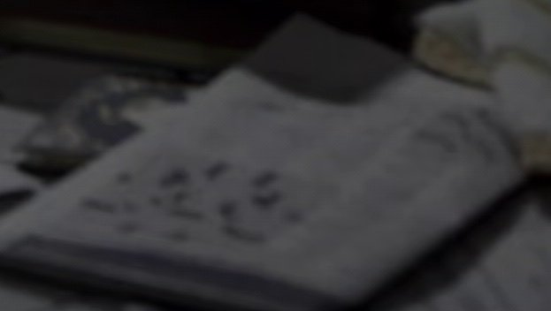
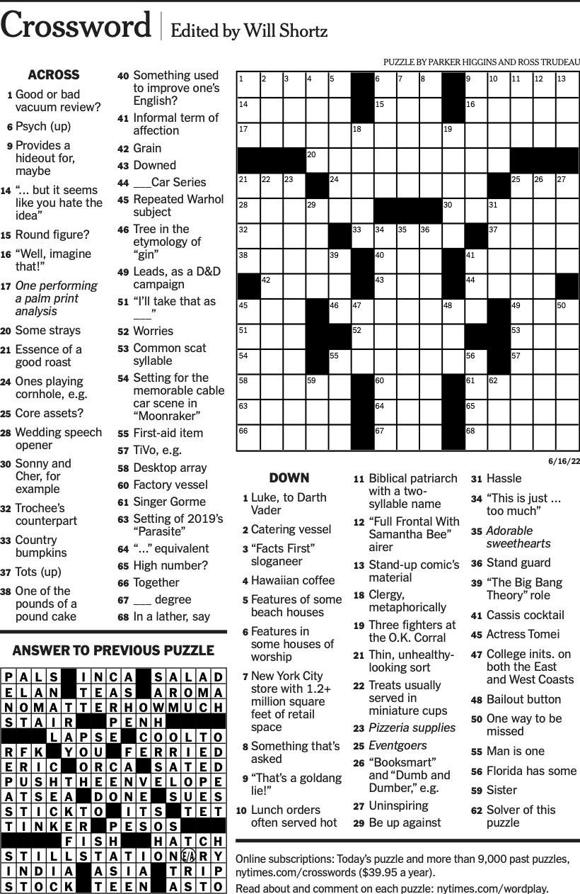
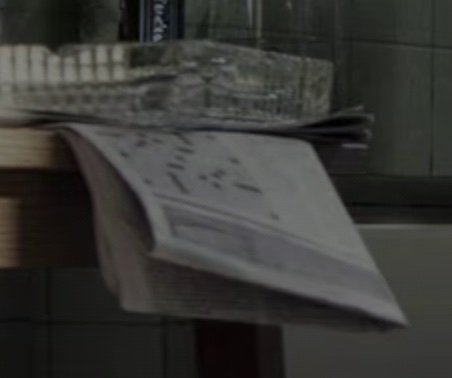
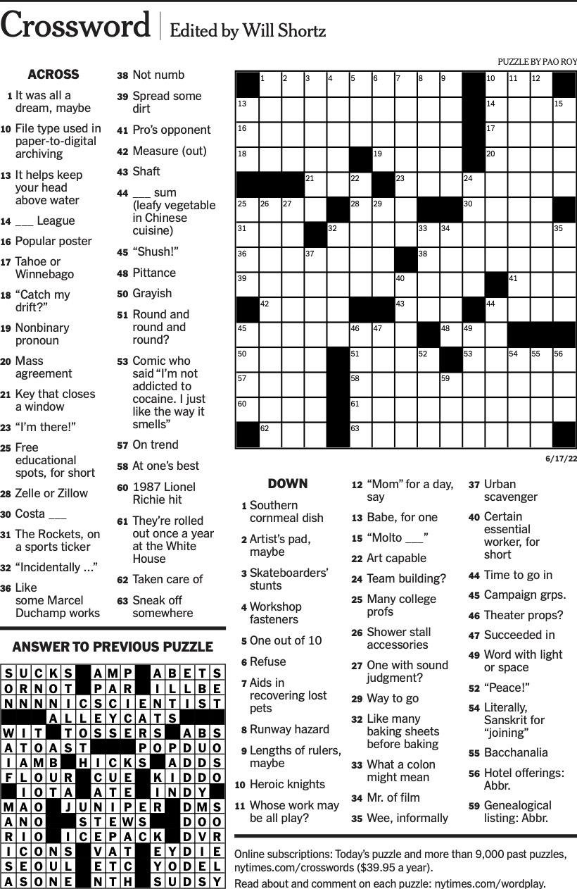

Real grids from real sources
Glass Onion: A Knives Out Mystery
Crossword by Parker Higgins & Ross Trudeau, New York Times, June 16, 2022



Crossword by Pao Roy, New York Times, June 17, 2022


Real grids from real sources



